Materiais para baixar
Documentos, slides, cartões e kit de divulgação, prontos para usar e editar.
Documentos
Todos em Word (editável) e PDF (impressão).
Plano de aula
Duas aulas de 50 minutos, com habilidades da BNCC, sequência, avaliação e adaptações.

Caderno de atividades
Onze atividades e fichas para imprimir: observação, diário, ficha de campo, cartas, cartão de emergência e mais.
Guia de inclusão (TEA e altas habilidades)
Recursos do jogo, agenda visual, história social, cartões de comunicação e trilhas de enriquecimento.
Instrumentos de avaliação
Pré e pós-teste, escalas, observação, grupo focal, entrevista, ética e análise dos dados.
Slides das oficinas
Arquivos PowerPoint editáveis, com notas do professor em cada slide.
Oficina para estudantes (6º ao 9º ano)
37 slides: base teórica primeiro, depois o jogo, com ficha de observação, mito ou verdade e missão para casa.
Oficina para agentes de defesa civil e pesquisadores
30 slides para o Seminário RRD 2026: o jogo, formas de uso nas escolas, aplicação e avaliação com a turma.
Instrumentos para agentes e pesquisadores
Para avaliar o jogo com uma turma de especialistas: experiência, intenção de uso e validação de conteúdo.
Instrumentos da oficina
Aviso ao participante, perfil, confiança pré e pós, experiência, validação de conteúdo (24 itens), observação técnica e roda de conversa.
Planilha da oficina
Digite as respostas e veja médias, concordância, índice de validade de conteúdo (I-CVI) e gráficos calculados automaticamente.
Recursos visuais
{kind=link}
{kind=link}
Kit de divulgação
Logo do HIDRO, artes para Instagram, Facebook, WhatsApp e Reels e textos prontos de legenda.
O licenciamento do jogo e dos materiais está em definição. Enquanto isso, o uso educacional é bem-vindo, com crédito ao autor. Para reprodução, adaptação ou publicação, entre em contato.